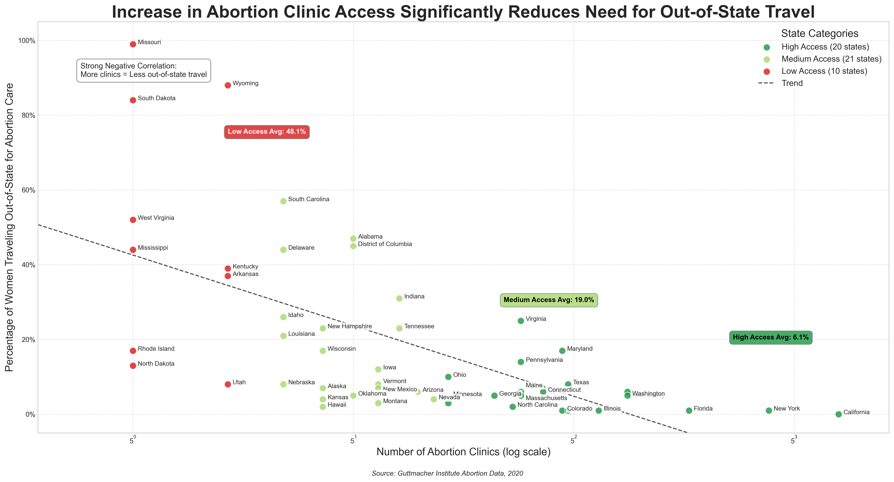
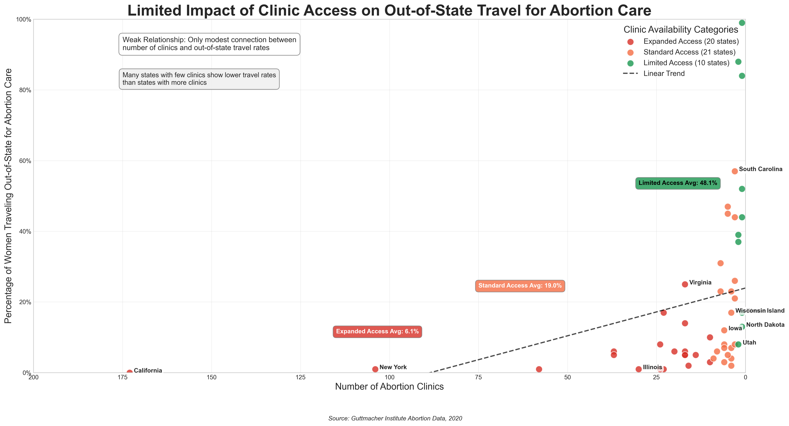

Proposition: An Increase in Abortion Clinic Access Leads to Lower Rates of Out-of-State Travel for Abortion Care, Improving Healthcare Equity for Women.
FOR the Proposition

Design Decisions and Rationale:
-
Decision 1: Using a logarithmic x-axis scale for the number of clinics
Score: 2.0 (Fully Earnest)
This decision allows for better visual separation of states with very different numbers of abortion clinics, especially since many states fall below 10 while a few have very high values. Without a log scale, most data would cluster at the low end, making patterns harder to detect. By applying a base-5 logarithmic scale and labeling it clearly, the design preserves interpretability while enhancing trend visibility. Although log scales can sometimes confuse non-technical viewers, the axis is explicitly labeled and aligned with the fitted trendline, maintaining visual integrity. -
Decision 2: Categorizing states into “High”, “Medium”, and “Low” access based on clinic count
Score: 1.0 (Mostly Earnest)
Grouping states into access tiers introduces a level of abstraction that makes the plot more digestible and supports the use of color to enhance storytelling. The cutoff values (10 or greater for High, 3 to 9 for Medium, and less than 3 for Low) are not inherently objective but are based on meaningful distinctions in access. These categories enable the addition of average labels, giving viewers quick insights into how access levels correspond with out-of-state travel. A drawback is that nuanced differences within categories are lost, and viewers may misinterpret them as official thresholds rather than design constructs. -
Decision 3: Adding a trendline based on log-transformed data
Score: 2.0 (Fully Earnest)
Including a trendline reinforces the negative relationship between clinic access and out-of-state travel. The log transformation matches the x-axis scale and accounts for skewed clinic count distribution, producing a better fit than a linear model on raw data. It also visually supports the annotation about the correlation, helping audiences draw conclusions without distorting the data. The choice to use a dashed, neutral-colored line (rather than a bold or colored one) helps ensure the trend doesn’t overshadow the actual data points. -
Decision 4: Selective state labeling with custom offsets
Score: 1.5 (Earnest)
Labeling every state would clutter the chart and obscure data, so labeling only a thoughtful subset, while skipping Michigan and Oregon, was a strategic move to maintain readability. The custom vertical offsets for certain states (e.g., Maine, Minnesota, New Jersey) help avoid label overlap and make the chart visually clean. Adding background boxes behind the text improves legibility against a busy plot. This enhances accessibility for viewers while retaining state-level specificity where it counts. An alternative might have been interactive or hover-over labels, but that wouldn't work for static formats. -
Decision 5: Framing annotation with “Strong Negative Correlation” wording
Score: 1.0 (Mostly Earnest)
The phrase “strong negative correlation” frames the viewer’s interpretation and helps anchor the narrative that access reduces out-of-state travel. While this is directionally correct, the visualization doesn’t display a correlation coefficient or statistical significance measure, which might have justified the “strong” claim more rigorously. It’s persuasive and aids interpretation, but it leans slightly into advocacy by using subjective language that could be misread as a quantitative conclusion. A more neutral phrasing or inclusion of the correlation value would make the claim more robust.
AGAINST the Proposition

Design Decisions and Rationale:
-
Decision 1: Manually Set Deceptive Trendline
Score: -2.0 (Fully Deceptive)
By manually setting a horizontal line at a specific y-value and calling it the line of best fit or trendline, this decision intentionally distorts the narrative. It creates a misleading visual that suggests no correlation between abortion clinic access and out-of-state travel, even if such a relationship exists in the data. This decision distorts the viewer’s interpretation by downplaying any potential patterns, which is a clear example of data manipulation to fit a desired narrative. -
Decision 2: Misaligned Y-Axis
Score: -1.5 (Deceptive)
Altering the y-axis scale can make correlations appear weaker or stronger than they actually are. By using a misaligned y-axis, the data can be skewed to suggest less of a relationship between the number of abortion clinics and the percentage of residents traveling out of state for care. This decision is deceptive because it affects how viewers perceive the strength of the relationship between these variables. However, the effect is not as extreme as other tactics, as a misaligned axis can sometimes be interpreted as a mere design choice. -
Decision 3: Ambiguity in Color Coding
Score: -1.0 (Deceptive)
The use of vague and unclear color coding for different access levels is deceptive because it makes it harder for viewers to interpret the data correctly. Without clear distinctions between categories, the viewer may struggle to understand how clinic access levels correspond to other variables. This decision creates a misleading impression of the data, even though it is less intentionally misleading than other tactics. A clearer and more defined color scheme would have improved the visualization’s transparency. -
Decision 4: Jittering Data Points
Score: -0.5 (Slightly Deceptive)
While jittering is a common practice to avoid over-plotting, its use in this context might obscure real patterns in the data. By adding random noise to the data points, it becomes more difficult to discern the true distribution of clinic access and travel behaviors. This decision slightly undermines the clarity of the visualization and makes the correlation between the variables appear less distinct. The intention here seems to be to smooth out the data points, but it may mislead viewers about the data’s true relationship. -
Decision 5: Cherry-Picking Certain States to Show
Score: -2.0 (Fully Deceptive)
By only showcasing a portion of the states, this decision intentionally excludes important data points that could provide a more accurate and balanced picture of the correlation between clinic access and out-of-state travel. By cherry-picking states that fit a desired narrative, the visualization manipulates the viewer’s perception of the data, leading them to draw conclusions based on a selective subset of information. This tactic is fully deceptive because it intentionally hides the full scope of the data and misleads viewers by giving an incomplete picture.
Final Reflection
[WRITE FINAL REFLECTION PARAGRAPHS HERE.]